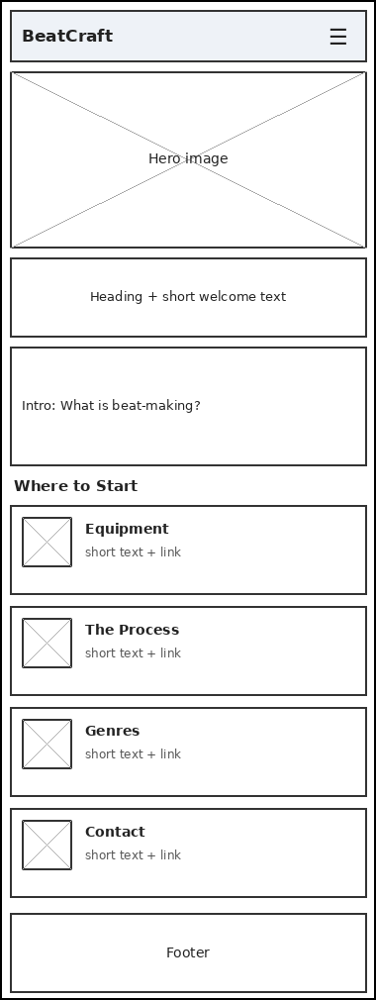
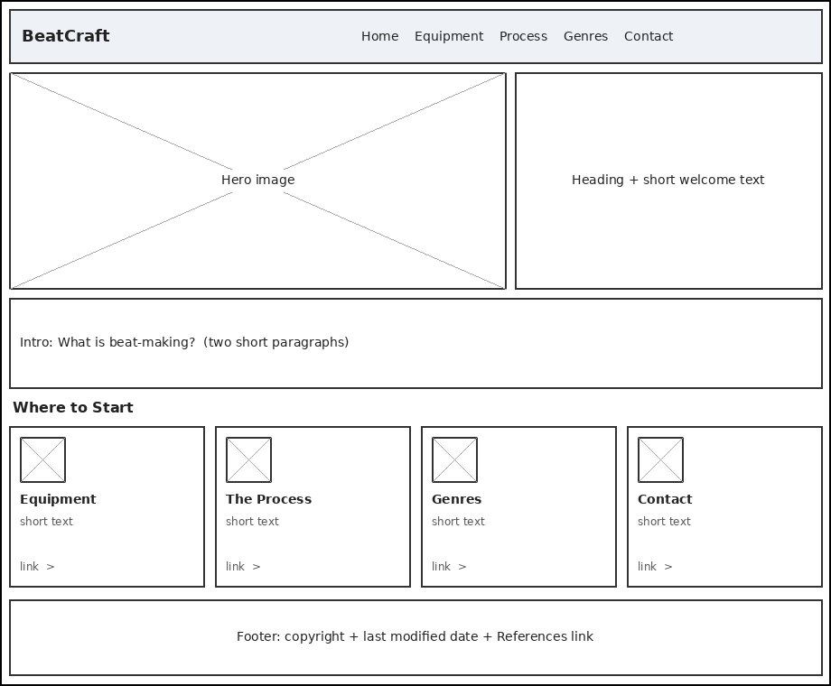

1. Site Name
BeatCraft
This name represents a site dedicated to the craft of beat-making - the skills, tools, and process behind creating beats - appealing to both the "craft"/skill angle and the music production audience.
Optional domain availability: beatcraft.info
2. Site Purpose
The site provides an informational hub for people curious about beat-making, covering the essential tools, step-by-step process, and genre styles involved in music production, aimed at beginners exploring the craft.
The site has five pages plus a references page: Home, Equipment, Process, Genres, and Contact.
3. Scenarios
- What equipment do I actually need to start making beats on a budget?
- What is the difference between trap, boom bap, Afrobeats, and amapiano production styles?
4. Color Schema
- #c1121f (deep red) — used for headings, links, and accent highlights. It was darkened from the first draft (#e63946) so text on the off-white background passes the 4.5:1 AA contrast ratio.
- #1d3557 (dark navy) — used for body text and header/footer backgrounds
- #f1faee (off-white) — used for page background
5. Typography
- Poppins (sans-serif) - used for headings, giving a bold, modern feel matching music production branding
- Inter (sans-serif) - used for body text, chosen for readability
6. Wireframes

